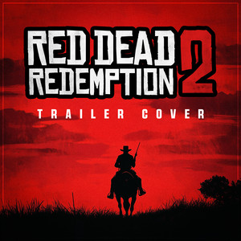
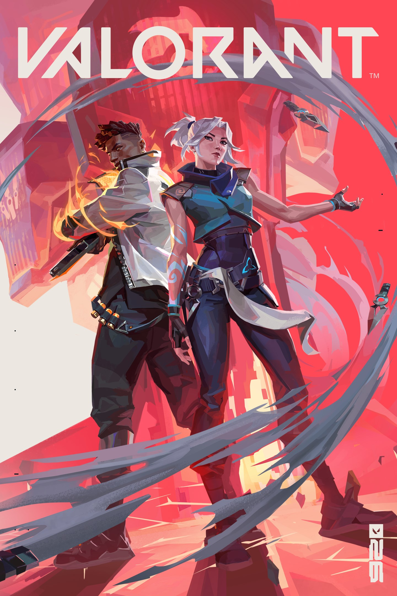

1. Red Dead Redemption 2

Red Dead Redemption 2 é um dos jogos que mais me marcou. A ambientação no Velho Oeste americano, a narrativa profunda e o desenvolvimento dos personagens tornam a experiência única. É um jogo que mistura ação, exploração e uma história emocionante sobre lealdade e consequências.
2. GTA 5

GTA 5 é um clássico moderno. O mapa aberto, a liberdade de ação e a possibilidade de jogar com três protagonistas diferentes tornam o jogo extremamente divertido. Além do modo história, o GTA Online mantém o jogo relevante até hoje, anos depois de seu lançamento.
3. Valorant

Valorant é um jogo de tiro tático em primeira pessoa, que combina mecânicas de mira precisa com habilidades únicas de cada agente. É um dos jogos que mais jogo atualmente, principalmente pelo aspecto competitivo e pela necessidade de trabalho em equipe.
4. Call of Duty: Black Ops II

Call of Duty: Black Ops II é um dos jogos de tiro que mais gosto. O jogo possui uma campanha envolvente, com momentos de ação intensa e uma história que apresenta diferentes possibilidades e escolhas. Além disso, o modo multijogador é muito divertido, principalmente para jogar com amigos.
5. Minecraft

Minecraft é um jogo que marcou minha infância e continua sendo muito divertido. A possibilidade de explorar, construir e criar praticamente qualquer coisa torna cada partida diferente. Também gosto bastante de jogar com amigos, principalmente em mundos compartilhados, onde podemos construir e explorar juntos.